Pokret koji vraćastabilnost i olakšavabol u leđima.
Individualni tretmani temeljeni na DNS-u, manualna terapija fascije i masaže. Primjenjujemo pokret za bolju stabilnost i funkciju kralježnice, manje bolova, prevenciju ozljeda, bolje disanje i sportske performanse.
- Pon–pet 9–12 i 14–20
- J. J. Strossmayera 101, Osijek
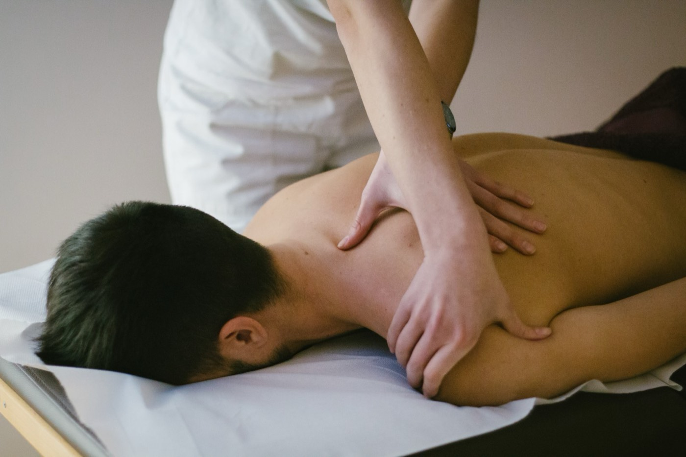
Znanje iz praške škole, Stecco instituta i rada sa sportašima
DNS tečaja (A, B i C) u Rehabilitation Prague School
razine Fascial Manipulation, Stecco institute
od te godine fizioterapeut seniorske momčadi NK Osijek
korisnika u grupi, uz nadzor fizioterapeuta
Od procjene do oporavka, pod jednim krovom
Uz korektivne programe nudimo i masaže. Svaki tretman prilagođavamo vašem problemu.
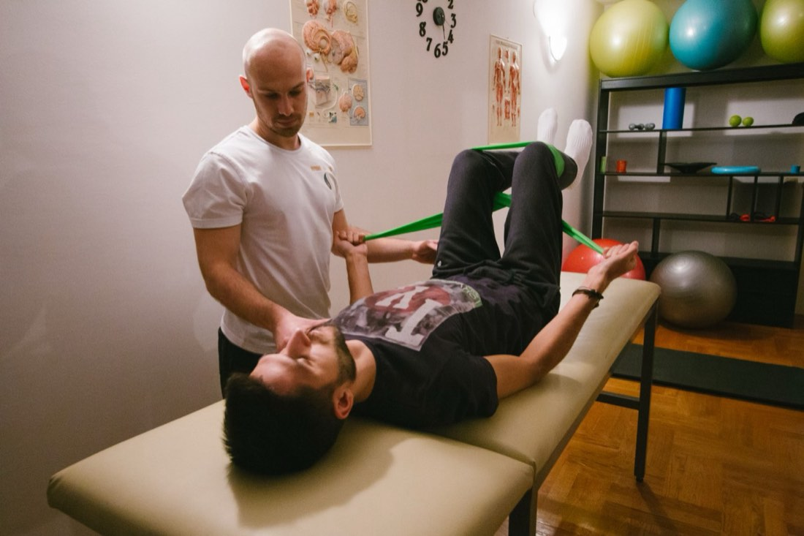
Individualni tretman
Fizioterapijska procjena, plan i program vježbi, pred- i postoperativna rehabilitacija.
Saznajte više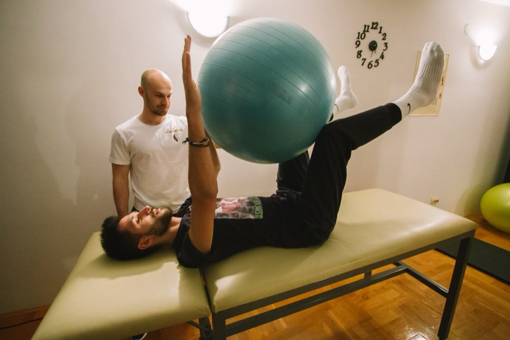
DNS vježbe
Dinamička neuromuskularna stabilizacija za kralježnicu, kukove, ramena i sportaše.
Saznajte više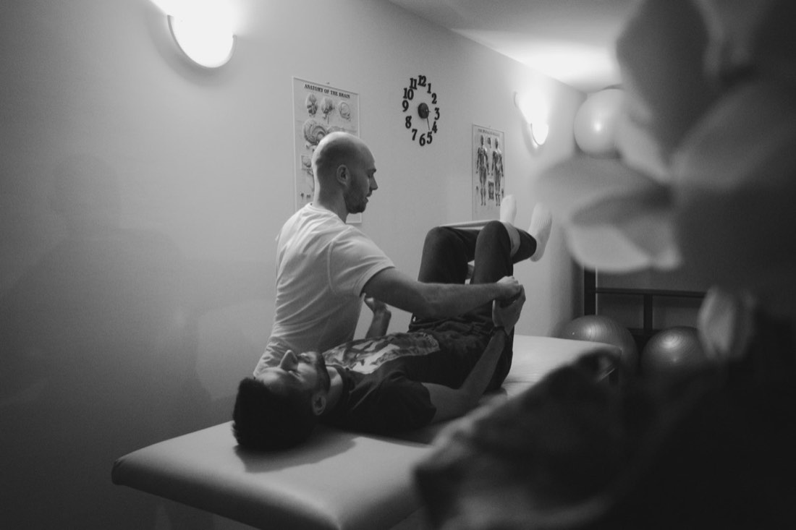
Manualna terapija fascije
Kod kronične i akutne boli, bolnih stanja kralježnice, trzajnih ozljeda vrata i tendinopatija.
Saznajte više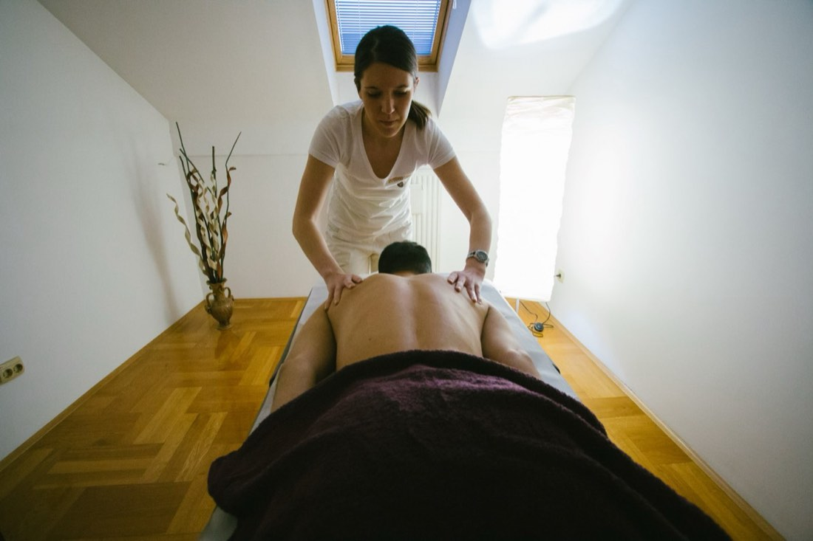
Masaže
Medicinska, sportska i antistresna masaža te masaža lica i glave i masaža stopala.
Saznajte više
Limfna drenaža i elektroterapija
Normatec sustav za limfnu drenažu, TENS i Compex elektroterapija.
Saznajte više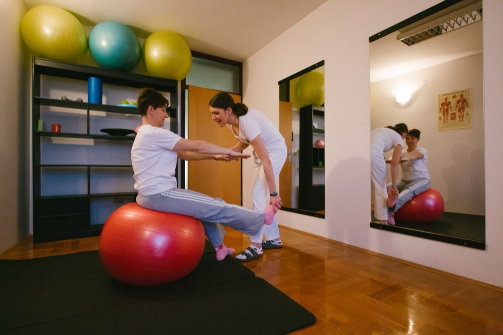
Grupne vježbe
Za osobe srednje i starije životne dobi: fleksibilnost, snaga i prevencija osteoporoze.
Saznajte višeKako izgleda vaš prvi termin
Procjena
Uvid u problem, uzimanje anamneze i procjena posture.
Plan i program
Izrađujemo individualan program vježbi ovisno o vrsti problema.
Tretman i vježbe
Manualna terapija, DNS vježbe, masaža ili kombinacija.
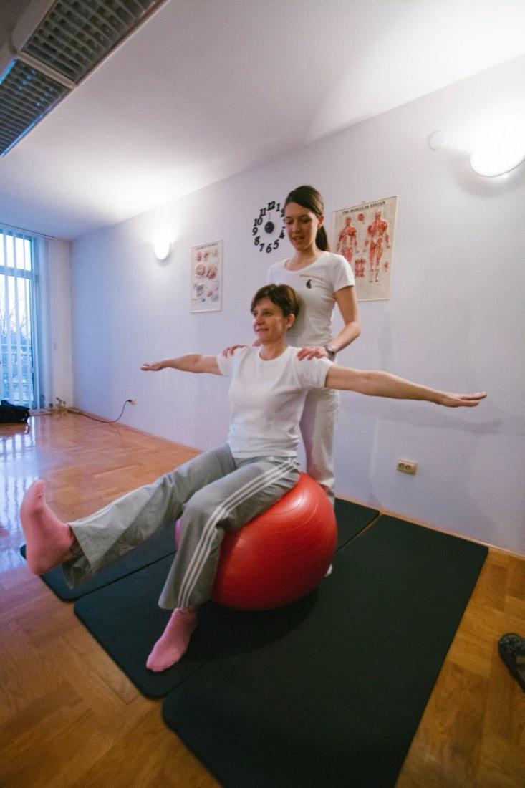
DNS: stabilan trup, slobodan pokret
Individualan tretman temeljimo na DNS-u, metodi duboke stabilizacije lokomotornog sustava. DNS nije samo tehnika, nego cjelovita strategija koja obuhvaća vještine pregleda, liječenja i vježbanja.
- problemi s kralježnicom
- smanjen mišićni tonus
- bol i ograničen pokret kukova
- bol i ograničen pokret ramena
- prevencija ozljeda
- bolje sportske performanse
Dvoje fizioterapeuta, jedan plan za vas
Moderan način života, stres, premalo kretanja, napetost mišića i bol mogu bitno smanjiti kvalitetu života. Zato u Studiju Vitalis spajamo korektivne programe i masažu.
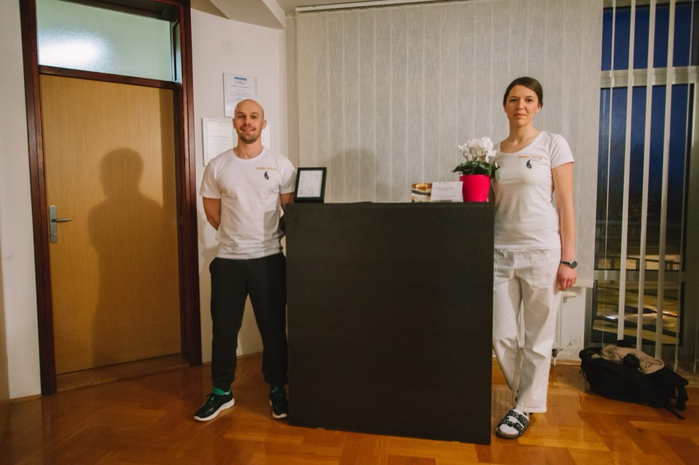
Marko Ovničević: obrazovanje i iskustvo
- Fizioterapeutski tehničar · Medicinska škola Osijek
- Stručni prvostupnik fizioterapije · Veleučilište Lavoslav Ružička, Vukovar
- Fizioterapeut · NK Osijek
- Stručno osposobljavanje · KBC „Sestre milosrdnice”, Zagreb
- Dynamic Neuromuscular Stabilization, tečajevi A, B i C · Rehabilitation Prague School
- Fizioterapeut seniorske momčadi · NK Osijek
- Fascial Manipulation, razine 1, 2 i 3 · Stecco institute
- Plivački klub osoba s invaliditetom Delfin Osijek
Mirno mjesto za oporavak
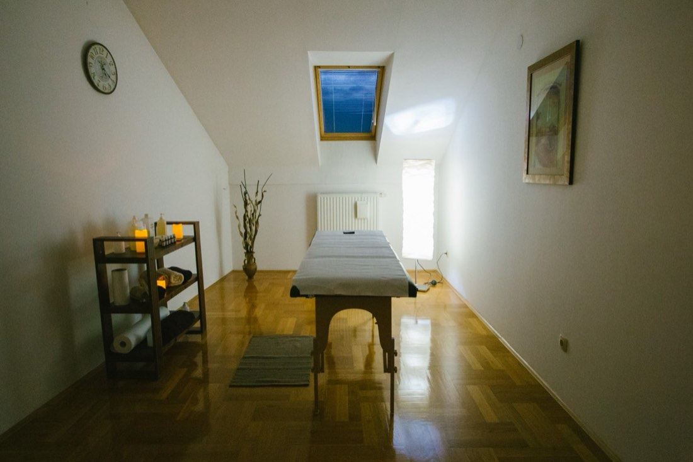
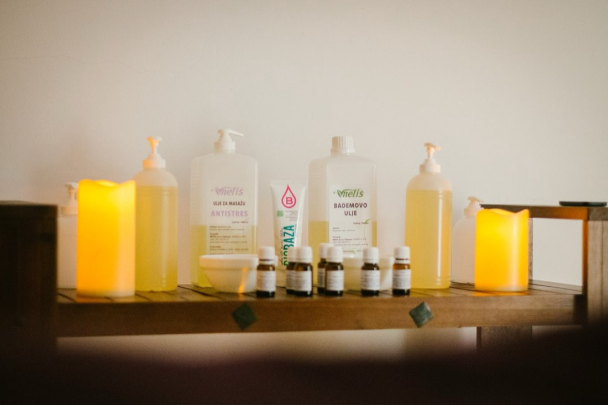
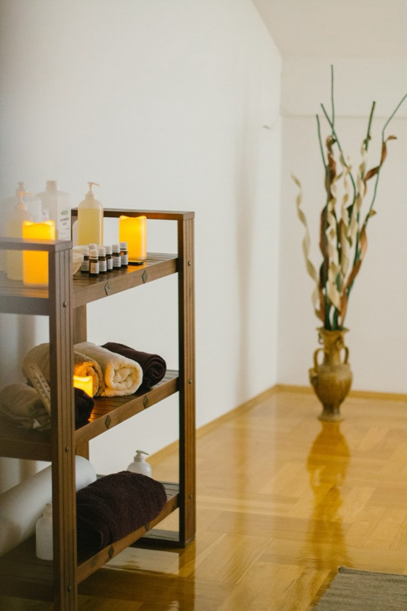
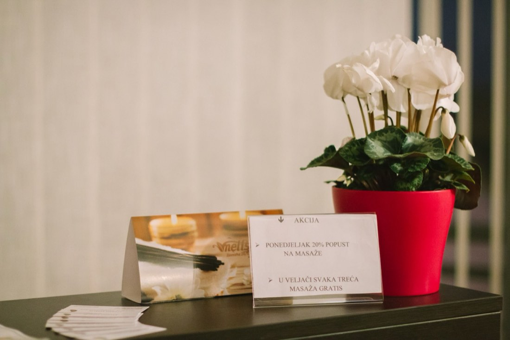
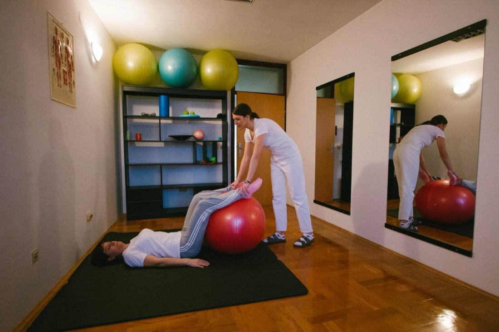
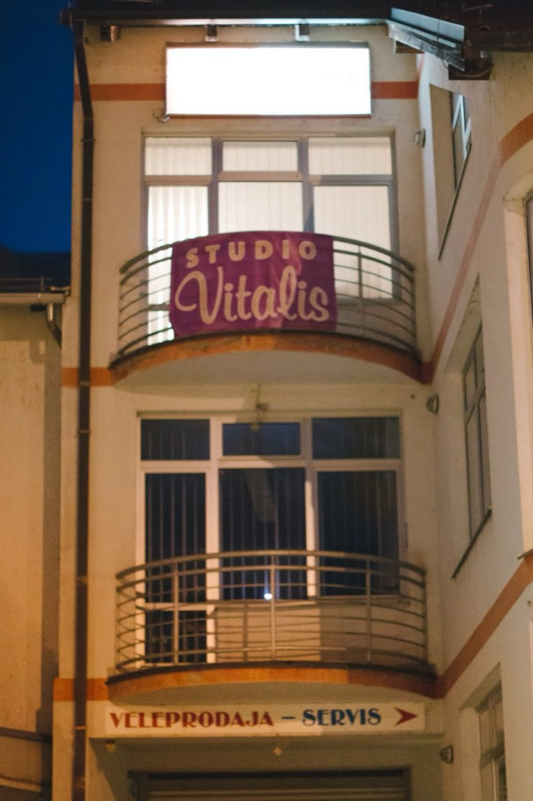
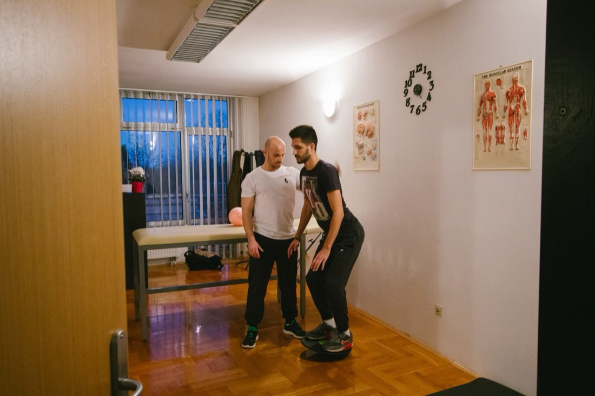
Poklon bon za najdraže
Poklonite masažu ili tretman u svakoj prilici. Poklon bonovi dostupni su za sve tretmane.
Prije prvog dolaska
Kako rezervirati termin?
Koliko košta prvi dolazak?
Kada radite?
Što su DNS vježbe i za koga su?
Provodite li grupne vježbe?
Mogu li kupiti poklon bon?
Dogovorimo vaš termin
Najbrže je nazvati, a upit možete poslati i obrascem.